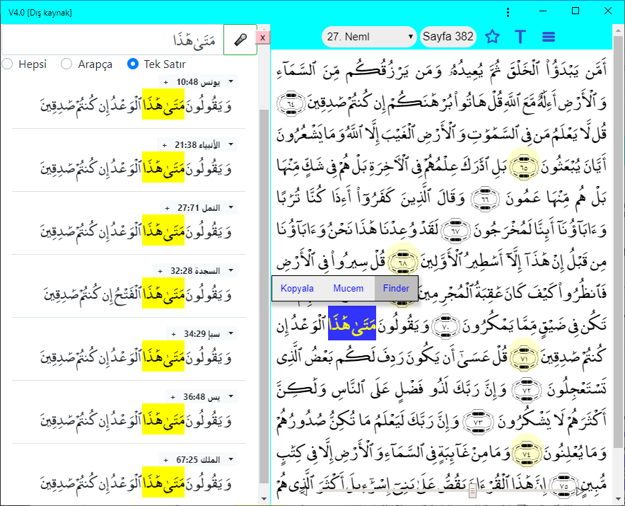

Iqra is a Qur’an reading and research tool, one of the hundreds of software applications made for reading our Noble Book, the Qur'an. The main features that distinguish it from other software include: marking the root of a word in the Qur'an text, displaying all pages where a word appears in the Qur'an on a single screen, and enabling offline functionality.
For ease of memorization and recitation, standard Mushaf pages are used in Iqra. The technical word for "mushaf" is "codex", a written form of the Qur'an text. "Mujam" is an index showing the occurrences of each word.
Software start link:
https://okuyun.org
Introduction videos:
https://okuyun.org/video.html
The start page appears like this (quick look):
When the Mushaf is opened, if the screen is wide enough both the Qur'an page and the translation appear. If both cannot fit together, only one is shown (See: Panels) In order to change the panel width, drag the yellow button with the double arrows. While the Mushaf is open, it is possible to go to the next or previous page, or specify another surah, juz, verse, or page number.

When the Page number at the top is tapped or clicked, a navigation dialog appears, similar to the start page. All search operations are managed by entering information into the single box in this dialog. Based on the data, the software decides which type of search or navigation is required. In the same dialog, it is also possible to use voice search to look up words using the microphone. Voice search is applicable only for Arabic text.
The start link can include page or verse numbers:

In this image, the page menu is visible, used mainly for external resources. Slide the yellow button with the double arrow to change the panel width.
Top-right buttons:
The root and meaning of Arabic words can be found by clicking with a mouse on desktop or tapping on mobile. Verses and words found in the search panel (Mujam or Finder) are highlighted in color in that panel. On narrow screens both verse and translation panels do not fit together; the T menu (or swiping) is used to switch between verses and translations. Fonts scale with screen width, so holding the phone sideways provides a better view.

In this image, the context menu is shown after two words are selected.
For the context menu: if there is a mouse, right-click; otherwise press and hold the word or touch with two fingers. The selected text is copied to the clipboard or sent to search modules.
The software supports three types of search:
The plain text search in Arabic text or in the Turkish-English translation was presented as a graduation project by Abdurrahman Rajab (Completion in June 2020)

In the Mushaf panel, the root "ktb" is highlighted, and then the word "da'îfan" is selected on page 47. From the word menu you can easily switch to the Finder panel to see all 4 occurrences. Tap the verse number in Finder to return to the Mushaf.
A microphone icon enables voice search (Arabic, Turkish, English).
The Mujam method works based on the roots of selected Arabic words. This method is designed for those who are familiar with the Qur'anic language or wish to learn it. Each of the 604 boxes shown on the page corresponds to a page from the Qur'an. The searched root does not appear at all on white pages. The color of each box is proportional to the number of words on the corresponding page. Details are on the related page

Some examples regarding verse similarity were given on this page. Is it possible to automatically find similarities like this? The answer is yes; with the similarity module it is possible to find verses containing multiple similar words:

On the example page, three verses are marked with blue numbers. For instance, for the verse 27:30, three similar verses are shown. The basmala appearing in this verse, of course, is the same as the first verse of the Book. As in Mujam, the similarity module also works with Arabic word roots, so it is used only in the Arabic text; there is not yet a similarity module for translations.
As a Progressive Web Application, its features include the following:
Let's summarize the software's capabilities using the examples below:
Panels – Search, Translation, Qur'anThe most obvious feature of the software is
the three-panel design:

Panels (three letters):
A: Access/Search, T: Translation, K: Qur'an
When viewing the Search panel only one of the following pages is visible: Start, Finder, Mujam, Topics, Notes, Stars, Book... (Book pages do not work offline)
If the screen is wide enough, all three panels are shown simultaneously. A laptop will fit two panels, a phone only one. In this case, yellow button or screen swiping are used to switch between panels.

Mujam: The shown ktb (kef-tâ-bâ) root and its various derivatives occur 319 times across 205 pages. In the image the selected page 59 contains the root 6 times; lighter colored pages contain fewer instances... We can read the related verses on the Mushaf page by clicking the yellow box. (There is also a context menu for the external resources) The Corpus link at the bottom right leads to the reference page we used.
Mushaf: On the open page 59, 6 words derived from the "ktb" root are marked in blue. After selecting a word in the Mushaf, you can switch to the Mujam and Finder search methods from the context menu. Searching for similar verses will be added to the verse menu.

Mushaf: On the open page 382 the letter sequence “metâ hâzâ” has been selected. From the context menu it is easy to switch to the Finder panel.
Finder: The image shows the verses where the sequence “metâ hâzâ” occurs. By tapping the verse number or the highlighted text you can return to the Mushaf or switch to external software from the menu.
In Qur'anic recitation, one encounters verses that resemble each other. To explain one verse by another, it is necessary to quickly move between similar verses and see them all together.
* Displaying the roots of Arabic words
* Functioning independently of the internet
* Automatically downloading updates for new versions
An index showing in which verses each word occurs
corpus.quran.com (GNU License is included below)
Each page is a box, each juz is a row
We chose the Medina mushaf for three reasons:
* Tajwid marks make reading easier
* Most common international writing style
* Compatible with different variant readings
 The screenshot shows the menu for Verse 51:58 and the menu for Page 522.
The screenshot shows the menu for Verse 51:58 and the menu for Page 522.
(C) 1992, 2012, 2019 by M Akif Eyler
Copied using GNU License